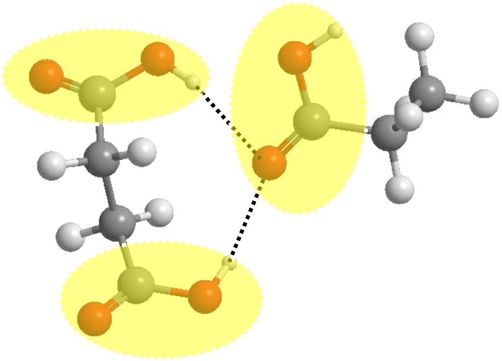

D_ATA¶
This section provides only a summary of D_ATA (Atom Typer and Analyser) features and capabilities. For more detailed descriptions of solftware usage, please refer to D_ATA Tutorial.
{kind=link}
Table of Content
D_ATA (Atom Typer and Analyser) is the latest edition to the DL_software family and it is a software analysis tool to classify, identify, annotate and quantify atomic interactions.
Functions
- Identification and annotation of the chemical nature of constituent atoms in molecular systems (Typer).
- Identification and annotation of atomic and molecular non-bonded interactions in the system (Typer and Analyser).
- Quantification of non-bonded interactions to rationalise the roles these interactions play in the molecular systems (Analyser).
- Characterisation of geometrical orientation of interactions (Analyser).
Unique features
- Universal atom typing (DL_F Notation), as implemented in DL_FIELD.
- Consistent expression syntax for atomic interactions (DANAI), as partially implemented in DL_ANALYSER.
D_ATA is in fact a product combination of these unqiue features.